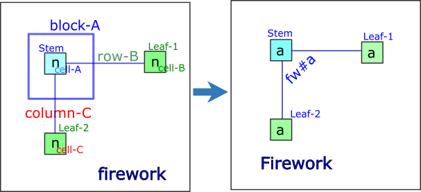
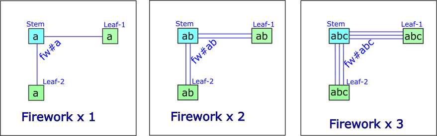
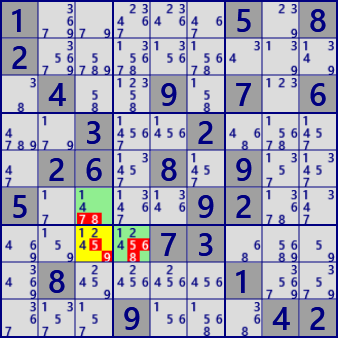
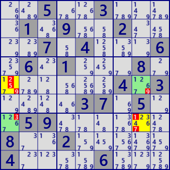
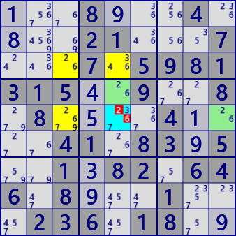
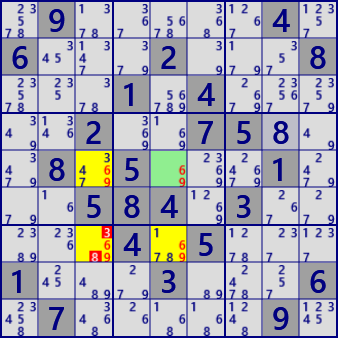

[GNPX v5.1]
Fireworks
Fireworkは、盤面上に生じる数字配置の状態で、これだけでは数独数字を肯定/否定することはありません。
しかし、複数のfireworkを組み合わせたり、他の数字配置と組み合わせて数独解法アルゴリズムとなります。
ALS、リンクなどと同様の、数独盤面上の状態です。
なお、Fireworkアルゴリズムは、次のHPを参考にしています。
The New Sudoku Players' Forum
http://forum.enjoysudoku.com/fireworks-t39513.html
Firework の定義
Fireworkは、次のように定義します。
- 盤面上の 数字”n”の配置に着目する。
- 数字”n”を候補に持つセル A を選ぶ。
- セルA のブロックを block-Aとする。
- block-A外で、かつセルA と同じ行Houseをrow-Bとする。
row-BにセルBを選ぶ。Bは数字”n”を候補に持つ row-B内の唯一のセルとする。 - block-A外で、かつセルA と同じ列Houseをcolumn-Cとする。
column-CにセルCを選ぶ。Cは数字”n”を候補に持つ column-C内の唯一のセルとする。 - Fireworkの構成セルが強いリンクでつながっている状態を、Firework-sとする。
命題 : Firework(セルA,B,C)は、少なくとも1個の数字"n"を含む
- セルBまたはセルCが 数字"n"なら、命題は正しい。セルB,Cが両方とも 数字"n"のこともある。
- セルB、C が両方とも数字"n"でないなら、セルAは 数字"n" となり、命題は正しい。
- セルA、B、Cがいずれも 数字"n" でないと、数独の問題として破綻する。
- 最初の図で、a1,a2,a3,a4 のいずれかが数字"n"となることはある。２つ以上のセルが数字"n"となることはない。
この場合も、セルBまたはセルCが 数字"n"であり、命題は正しい。 - Firework-sでは、セルB、Cの状態は同じとなる。
以下では、Fireworkを次のように表記する。

Fireworkアルゴリズムでは、重なったFireworkを用いるものがある。

Fireworkには、次のような特殊なタイプもある。
- Strong型 : StemとLeafが strongLinkでつながったタイプ。2つのLeafは、候補数字と属性が一致する。
- Leafが1つしかないタイプ。
Fireworks 解析アルゴリズム
(1) Firework triple
このとき、stemとLeaf-1,2のセルは3数字で Locked であり、3数字以外の候補は除外できます。

Firework_Triple
Stem : r7c3 #12459
Leaf:r6c3 r7c4
1.....5.82.........4..9.7.6..3..2....26.8.9..5....92......73....8....1.....9...42
(2) Firework Quadruple
2つの firework が重なっている状態を Fireworkx2 と表記します(stemとLeafが全て一致する)。
これは、4セルに4数字が Locked となっています。従って、4セルの4数字以外の候補は除外できます。

Firework_Quadruple
Stem : r5c1#17 r7c8#26
Leaf : r5c8#12679 r7c1#12367
1.....5.82.........4..9.7.6..3..2....26.8.9..5....92......73....8....1.....9...42
(3) Firework WWing
Fireworkx2 と、2つのbivalue Cell(ALS)が次の図のように配置されているとします。
この状態は Locked で、交差する位置にある数字要素（次図の"a")は除外できます。

Firework_WWing
Stem : r3c3#26
Leaf : r3c5#346 r5c3#2679
Assist : r4c5#26 r5c9#26
Exclude : r5c5#26
1..89..4.8..21...7...7.59813154.9..8.8.5..41...41.8395..1382.646.89..1...236.18.9
(4) Firework LWing
2DFirework と、1つの強fireworkがLeafを共有しているとします。
この状態で、Leafセルから強firework の数字要素（次図の"x")は除外できます。
(5) Firework ALP-s
Fireworkx2 と、1つのBivalueセルが次図のように配置されているとします。
この状態で、Stemセルから Firework の数字要素以外の数字（次図の"z")は除外できます。

Firework_ALP-s
Stem : r7c3#69
Leaf : r5c3#34679 r7c5#16789
Assist : r5c5#69
Exclude : r7c3#69
.9.....4.6...2...8...1.4.....2..758..8.5...1...584.3.....4.5...1...3...6.7.....9.